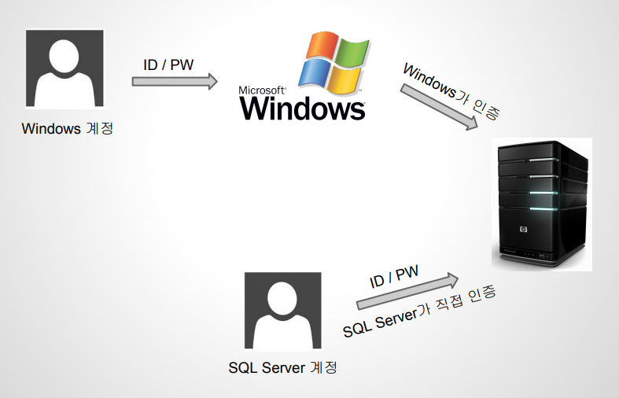
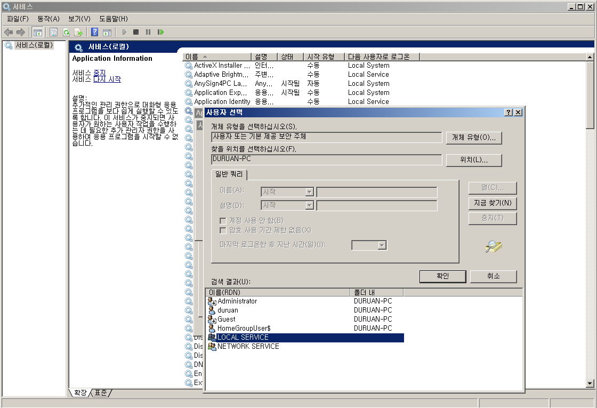

설치 및 설정 변경
설치 전에 알아야할 내용
- 인스턴스
- 인증모드
- 서비스 계정
인스턴스
인스턴스란 Database 엔진을 말함
-
SQL Server 하나의 인스턴스에 여러 개의 데이터베이스를 가질 수 있음
-
하나의 시스템에 여러 개의 인스턴스를 가질 수 있음
인증모드
인증모드란 SQL Server 로 접속할 때 사용될 방식을 말함
-
윈도우 인증 모드: 윈도우 계정을 통해 SQL Server 에 접속 가능한 방법
-
혼합모드: 윈도우 계정 또는 SQL Server 에서 만든 계정으로 접속 가능한 방법

서비스 계정
SQL Server 인스턴스가 실행될 Windows Service 의 계정을 말함

처음으로
다음